Zero-Daemon Process Durability
For Long-Horizon Python Workflows
When long-running Python scripts or LLM pipelines get killed mid-execution, LetItLoop's Write-Ahead Log (WAL) resumes the exact unfinished step in under 1 millisecond with zero lost state or duplicate tokens.

Irreducible Distributed Systems Invariants
Single-file Python durability with zero background daemons, zero external databases, and zero lock contention.
Torn-Tail Safe Frames
Checksummed frames (LILWAL02) with valid-prefix truncation. If the host machine dies mid-write, LetItLoop repairs the torn suffix automatically on load.
Auto-Stealing Supervisor
File-backed supervisor locks auto-steal dead locks if the previous process crashed. Background heartbeat daemons prevent lock expiration during slow LLM calls.
Proof-Carrying Receipts
Every completed run seals an HMAC-SHA256 ProofReceipt recording AST invariants, test outputs, and scope snapshots for machine-verifiable compliance.
Worktree Mutex
Concurrent worker subagents run in isolated git worktrees serialized via FileLock with pre-rollback backup refs before any hard reset.
Sub-Millisecond Resume
Cached steps are skipped in under 1ms on resume, injecting previously verified outputs straight into scope without paying duplicate LLM API costs.
Autonomous GitHub Suite
Autonomous workflows for Ruff auto-formatting, daily CVE remediation PR bots with attached proof receipts, and PR latency benchmark checks.
10-Second Quickstart
Install via pip and wrap your multi-step pipelines with @durable.
pip install letitloop
from letitloop import durable, step
@durable(task_id="scientific-pipeline")
def run_pipeline(dataset_path: str):
# Step 1: Cached to local WAL in 0.3s
data = step("load_data", lambda: parse_dataset(dataset_path))
# Step 2: If SIGKILL strikes here, Step 1 is fast-forwarded in 0.94ms
model = step("train_model", lambda: train_weights(data))
# Step 3: Seals proof receipt to .bench_wal/proof_receipt.json
results = step("evaluate", lambda: run_eval(model))
return resultsZero-Daemon Footprint vs Heavy Orchestrators
Pure Python process durability without external database clusters.
| Architecture Dimension | LetItLoop (LIL) | Temporal / Airflow | Celery / Redis | Standard LLM Agents |
|---|---|---|---|---|
| Runtime Footprint | 0 Background Daemons | Postgres + gRPC cluster | Redis / RabbitMQ | In-memory only |
| Crash Recovery Latency | < 1.0 ms (WAL) | 50–200 ms (Network) | 10–50 ms (Polling) | Total Loss (0 ms) |
| SIGKILL 137 Safety | Deterministic Fast-Forward | Server-side retry | Worker re-spawn | Fatal Session Wipe |
| Cryptographic Receipts | HMAC-SHA256 Sealed | Audit logs | None | None |